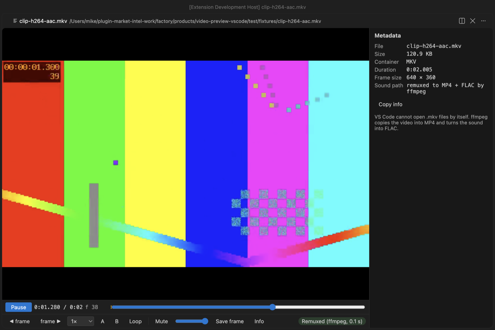

Open files in VS Code and Cursor / Media
Play MOV, MKV and WebM videos in VS Code
VS Code's own player shows H.264 video but has no AAC decoder, so most MP4 and MOV files play silent, and it cannot open MKV or WebM at all. Video Preview with Sound plays MP4, MOV and M4V with AAC sound and nothing else to install. For MKV, WebM and AVI it needs ffmpeg on your computer. Playback, sound, subtitles and conversion are free. Zovo Pro (USD 19 once) adds clip export, frame export and a contact sheet, with 3 free tries each.
Free, MIT license. Extension ID zovo.video-preview-with-sound, version 0.3.2. Needs VS Code 1.90.0 or newer.

Steps in VS Code
- Install Video Preview with Sound from the Marketplace, or press Ctrl+P (Cmd+P on macOS) and run
ext install zovo.video-preview-with-sound. - For MKV, WebM, AVI or AC-3 sound, install ffmpeg first. Run
winget install ffmpegon Windows,sudo apt install ffmpegon Linux orbrew install ffmpegon macOS. MP4, MOV and M4V with AAC sound need nothing more. - Click the video in the Explorer and press Space. If VS Code asks which editor to use, pick "Video Preview with Sound".
- An MKV or WebM is copied into MP4 without re-encoding and plays with sound. ProRes, AVI, WMV and other video VS Code cannot decode is converted to H.264 once and kept in the cache.
- Put an
.srtor.vttfile with the same name next to the video and the subtitles load by themselves. Press C to switch tracks. - Step one frame with
,and., change speed from 0.1x to 4x, set a loop with A and B, and press S to save the current frame as a full-size PNG.
Where Zovo Pro saves time
Playback with sound, picture-in-picture, subtitles, frame stepping, A-B loop, saving one frame as PNG and the conversion of videos VS Code cannot decode are free.
To share the part of a video that matters in a pull request, an issue or docs, Clip export saves the A-B part as a GIF (480 px at 10 fps, 640 px at 15 fps, or up to 960 px at 15 fps, at most 60 seconds), made inside the player with no other tool. Or it saves an MP4 cut by your ffmpeg, either exact (re-encoded, starts on the A frame) or fast copy (starts at the keyframe before A). The other two Pro tools save frames as numbered PNG files and a contact sheet of the whole video.
With Clip export (Zovo Pro)
- Set the start with A and the end with B.
- Press Clip and pick a GIF size, or an MP4 (exact or fast copy).
- Pick where to save. Esc stops the export, and a stopped export uses no free try.
Clip export works 3 times on your computer before it asks for a license, and a try counts only when you get a result. Opening a file shows no popup and no countdown.
Zovo Pro costs USD 19 once. It is not a subscription, and it turns on the Pro tools in every Zovo extension, not only Video Preview with Sound. After a card payment (Stripe) your license key shows on the next page. In VS Code, run "Zovo Pro: Enter Zovo Pro license key" from the Command Palette and paste it. The key is checked on your computer, with no network call. With GitHub Sponsors, pick the "$19 one time" tier, then run "Zovo Pro: I already paid: unlock with GitHub Sponsors" and sign in with the same GitHub account. With PayPal, send USD 19 with "Zovo Pro" in the note and the key comes by email within a day.
A team of 5: USD 59 once, by card or by PayPal. Every rule and every Pro tool is on the Zovo Pro page.
Steps in Cursor, Windsurf or VSCodium
- Open the Extensions view with Ctrl+Shift+X (Cmd+Shift+X on macOS).
- Search for
zovo.video-preview-with-soundand click Install. Cursor, Windsurf and VSCodium install from Open VSX, where it is published aszovo/video-preview-with-sound. - If your editor has no gallery, download the .vsix from the Open VSX page and run "Extensions: Install from VSIX...".
- Then use it the same way as in VS Code.
What Video Preview with Sound handles
- MP4, M4V and MOV with AAC, ALAC, MP3 or PCM sound, with no other install.
- MKV and WebM, and AC-3, E-AC-3, DTS or 5.1 sound, with ffmpeg.
- ProRes, MPEG-4 Part 2, AVI, WMV, FLV, MPG, OGV and M2TS, converted to H.264 with ffmpeg.
- SRT and VTT subtitles next to the video.
What it does not do
- MKV, WebM, AVI and the formats VS Code cannot decode need ffmpeg on your computer.
- Files larger than 4096 MB still play, without sound (setting
videoPreview.maxDecodeSizeMB). - It is a player, not a video editor.
Other options
- VLC. A free desktop player that plays almost any video file, outside VS Code.
- ffmpeg.
ffmpeg -i in.mkv -c copy out.mp4copies the streams into an MP4 without re-encoding. Free. - VS Code's own preview. Plays H.264 video, but with no sound for AAC audio, and does not open MKV or WebM.
Install counts and Open VSX status were checked on 12 November 2026. Descriptions in quotes are the extensions' own.
Questions
Why does my MP4 play with no sound in VS Code?
VS Code ships the H.264 video decoder but no AAC decoder, and most MP4 and MOV files use AAC. This extension carries its own decoder for AAC, ALAC, MP3 and PCM sound.
Do I need ffmpeg?
Not for MP4, MOV and M4V with AAC sound. You need it for MKV, WebM, AVI, AC-3 or DTS sound and for video VS Code cannot decode.
Does it remember where I stopped?
Yes. Each video opens where you left it, at the same speed.
Does it work in Cursor or Windsurf?
Yes. Cursor, Windsurf and VSCodium install extensions from Open VSX. Search for the extension in their Extensions view and install it there.
More about Video Preview with Sound
Read the Video Preview with Sound page for every feature and setting, or the source code on GitHub.
Related guides
- MP4 Video Player & Preview with Sound on the VS Code Marketplace (also on Open VSX). Plays MP4, MOV, MKV and WebM files in VS Code, with sound.
- Why VS Code plays MP4 with no sound, and how to fix it
- Extract frames from a video in VS Code
- Make a video contact sheet
- Open a .docx Word file in VS Code
Zovo Pro and support
Zovo Pro: USD 19 once, every Zovo viewer. It turns on the Pro tools in this extension and in the other Zovo extensions you use. The free features stay free.
After a card payment your license key shows on the next page. Paste it with the command "Zovo Pro: Enter a key".
You can also support the work with no Pro:
Need your format supported?
Open a format request with a sample file, and I reply there whether it can be done. For USD 299 once, through this GitHub Sponsors tier, I add your file format or a missing feature to this extension, with tests, within 7 days.